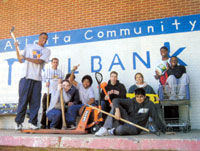
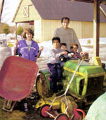
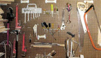

Start Your Own Tool-Sharing Program
Pooling your resources with neighbors or forming a community tool co-op leads to more tools for everyone.
By Dave Wortman
April/May 2004
By Dave Wortman
There's nothing like having just the right tools to help make your projects go smoothly. But, tools can be a big investment for homeowners. When money is tight, tool costs can make or break a project. And often, we only need that 20-foot ladder once a year to clean the gutters. Many table saws sit idle in the garage for months at a time.
Some neighborhoods and communities across the country have discovered a better way-tool sharing. It's an idea that's alive and well, from small housing cooperatives in rural areas to lending programs in large cities. And many people are finding that, in addition to making economic sense, tool sharing offers a way to simplify life and create community, pulling together neighbors to exchange ideas, skills and a helping hand.
THE ROOTS OF TOOL SHARING
Many of today's thriving tool-sharing programs grew out of the cooperative movement of the 1970s, which spawned a proliferation of co-ops, from food to housing and energy. Tool-sharing promotes many cooperative core values: self-help, self-responsibility, equality and solidarity.
Today's tool-sharing and lending programs range from small, informal arrangements among neighbors to large operations supporting thousands of community volunteers. They include tools for carpentry, landscaping, woodworking and car repair, and are housed in homes, community wood shops, libraries, neighborhood centers and even warehouses. And you'll find the programs supporting all walks of life, from single working mothers to farmers living off the land.
Roger Faris knows the economic value of tool-sharing programs well. He's spent the last 25 years running Seattle's Well Home Program, which includes a tool bank. The program began in the wake of devastating impacts on the city from Boeing layoffs in the early 1970s.
"People were really struggling," Faris says. His program is in an old elementary school building and loans out carpentry tools; it was an immediate hit and continues to thrive, loaning tools and how-to books to Seattle residents for donations.
In Grand Rapids, Mich., the Home Repair Services tool-sharing program has provided critical support to poorer residents for a quarter-century. Lending carpentry tools to people with an average income of $18,000 or less, the program helps its users realize the dream of home ownership. "It's become wildly popular," says Dave Jacobs, executive director. "We were shocked to find so many self-reliant people." In the last year, Jacobs says the program made more than 4,000 individual tool loans, many to single mothers and senior citizens.
BUILDING COMMUNITY
Beyond its economic practicalities, tool sharing has become an integral part of the growing cohousing movement (see "It Takes an Ecovillage," June/July 2003). At the Boulder, Colo., Wild Sage Cohousing project, which is under construction, toolsharing is an integral component of the community. Architect and resident Bryan Bowen says Wild Sage will include a shared wood shop to support residents' hobbies, foster interaction and help build self-reliance. The shop will support a wide range of activities, from jewelry making and car repair to woodworking. "One of my favorite aspects of it is teaching adults and kids self-reliance," says Bowen. "It's a great way to create community."
Joe Nolan, a resident of Ithaca, N.Y.'s, 60-family Ecovillage housing project says his community's wood shop is an extension of their Common House. "Experts help newbies get trained on machines," says Nolan, noting that the wood shop even has a "kidsized" workbench to train children in a collaborative and supportive setting.
Other communities, such as Pioneer Valley Cohousing in Amherst, Mass., take a simpler approach. Resident Nancy Bair says a number of residents have banded together to form their own tool-sharing agreements, with plenty of informal sharing going on, too. "Two or three people may own a small grass clipper together," she says. "We have a couple of groups whose members own a second car together."
EMPOWERING PEOPLE
At Cobb Hill Cohousing, tool sharing is much more than a community building exercise: It's a way of life for this working farm in rural Vermont. "The community shares several kinds of tools, from Kubota tractors to woodworking tools," says Jay Mead, Cobb Hill resident. Residents share in maintaining equipment too, forming committees to deal with the largest pieces.
Tool-sharing programs also are reaping big rewards in supporting community-based volunteer programs around the country, from tree plantings to building renovations. Every spring, "green teams" of more than 1,000 volunteers take to the streets of Providence, R.I., to pick up trash and tires, and to tackle planting and gardening projects. Their success depends on a tool-sharing program called Groundwork Providence, a local nonprofit organization that shares its shovels, rakes and other equipment with Providence residents. "They wouldn't be able to do these projects without our tools," says Beshka Candelaria, Groundwork Providence's neighborhood liaison.
Among the largest tool-sharing programs in the United States is Atlanta's Community ToolBank, which operates from an old broom factory. Started in 1995, the program now serves more than 350 neighborhood groups and a staggering 47,000 volunteers every year. Mark Brodbeck, executive director, says the program owns more than $500,000 worth of tools, including 20,000 shovels, and supports projects such as street cleanups and renovations of homeless shelters. Its biggest effort is helping with the massive Hands On Atlanta Day, which draws 16,000 volunteers for a variety of projects, from park cleanups to mural paintings. "Every tool is gone for Hands On Atlanta," Brodbeck says. "We are a magnifying glass, focusing the energy of the community to create more heat and fire." (Anyone interested in learning more about starting their own tool-sharing program can contact Brodbeck at www.toolbank.org .)
FACING THE CHALLENGES
Even with all of the benefits of tool-sharing programs, they are not without their challenges. From housing cooperatives to larger public programs like Atlanta's, many common problems arise. They range from a lack of organization to funding shortages to tool maintenance. "Paint sprayers are losers," says Faris of Seattle's Well Home Program, noting that intricate tools often require frequent repair. He says the constant need for maintenance may make some tools of this sort impractical for smaller sharing programs that lack the needed maintenance skills among participants.
Tool-sharing programs also must confront funding constraints. At EcoVillage at Ithaca, suggested member dues of $60 a year help to maintain and procure equipment and supplies. Several programs collect tool maintenance fees, or charge fees for the late return of tools, while others rely on grants, including federally funded Community Development Block Grants, fundraising or donations.
Tracking the fate of tools on loan is essential, too. Kari Lang runs the nonprofit West Broadway Neighborhood Association's tool-sharing program in Providence. She says record-keeping is an important component of the program. "In the past, on busy days, we were lax in following the checkout system for familiar faces," she says. "But even with a community of familiar faces, tools would end up sitting in someone's basement." Some larger lending programs have turned to computer databases to help track tools on loan. Atlanta's Brodbeck says, "Organizing shovels is far from sexy."
Some tool-sharing programs carry liability insurance, but Dave Jacobs of Michigan's Home Repair Services has yet to encounter liability issues. "The people borrowing our tools are not the kind that would sue us," he says, adding that insurance costs could be a real problem for smaller groups without a track record of safety. Other programs, like Atlanta's Community ToolBank, require users to sign liability waivers for power tools.
KEYS TO SUCCESS
Whether it's simply to help neighbors down the block or to mobilize a community, virtually anyone can start a tool-sharing program. On its most basic level, sharing can be as simple as meeting, developing a list of tools and swapping contact information. "Keep it simple-don't try to be a tool rental shop," says Seattle's Fans. In addition to creating maintenance headaches, larger power tools also can carry greater operating dangers, particularly for the less-skilled homeowner.
A dedicated and skilled do-it-yourselfer can go a long way toward getting a tool-sharing program off the ground. "It really helps to have someone who is skilled in repair," Jacobs notes. "Otherwise, the tools waiting to be repaired may just pile up."
There also are creative ways to fund tool-sharing programs. Wild Sage Cohousing plans to use unspent contingency money from the construction budget to buy tools for the wood shop; although, so far, most of the tools have been donated by people moving into the community.
Organizer Bowen notes that either a membership fee or a pay-as-you-go system will fund ongoing maintenance. Ithaca's Nolan says that after an initial construction investment, generous donations of power and hand tools from residents helped stock the shop.
Beyond the most tangible challenges and benefits, the best aspect of tool-sharing programs may well be the empowering impact they have on individual lives. Brodbeck, Faris and others say they have seen the satisfied looks on people's faces when they've realized their ability to build, create and contribute to their communities.
In the end, when a smiling Seattle resident walks into his office to return tools, Faris only needs to hear three small words to remind him that tool sharing is making a real difference to his community: "I did it!"
Tool-sharing Start-up Advice
Are you thinking of starting a tool-sharing program in your community or neighborhood? Here are some helpful tips:
• Hold a meeting to find out people's needs and available resources.,
• Determine the scope of the program; it's often best to start with simpler hand tools.
• Determine storage
-will tools be stored in homes or in a common space?
• Determine how costs will be covered for tool purchases and ongoing maintenance.
• Develop a clear set of lending, repair and tool-return rules.
• Develop a list of "experts" who can share skills.
• Organize a system to track checkout and return of tools.
•Assign responsibility for maintenance and repair.

Joe Nolan
Dave Wortman writes from his home in Seattle, where he is a long-time member of the Well Home Program.
Mother Earth News
|
 Courtesy Atlanta Community Tool Bank The EcoVillage at Ithaca provides garden and workshop tools for community members to share. |
 Joe Nolan Dave Wortman writes from his home in Seattle, where he is a long-time member of the Well Home Program. |
 Joe Nolan |